V sekci Čisté funkce jsme zjistili, že je mnohem snadnější testovat správnost funkce v Elmu než v jazycích, postrádajících čistotu funkcí. V této sekci si vysvětlíme, proč tomu tak je. Také si několik testů napíšeme abychom se ujistili, že naše implementace různých funkcí v modulu RippleCarryAdder je správná. Nejprve se musíme naučit, jak testy v Elmu psát.
Seznámení s testy v Elm
Vytvořte adresář tests v kořenovém adresáři projektu (beginning-elm). Ukládat testy v separátním adresáři je výborná praxe. Uvnitř adresáře tests vytvořte soubor elm-package.json.
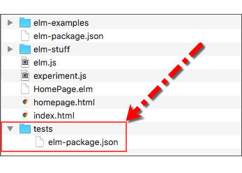
Následující kód vložte do souboru tests/elm-package.json.
{
"version": "1.0.0",
"summary": "A sample app for learning web application development with Elm.",
"repository": "https://github.com/user/project.git",
"license": "BSD3",
"source-directories": [
".",
"../elm-examples"
],
"exposed-modules": [],
"dependencies": {
"elm-community/elm-test": "3.1.0 <= v < 4.0.0",
"elm-lang/core": "5.0.0 <= v < 6.0.0",
"elm-lang/html": "2.0.0 <= v < 3.0.0",
"rtfeldman/html-test-runner": "2.0.0 <= v < 3.0.0"
},
"elm-version": "0.18.0 <= v < 0.19.0"
}Rovněž je výborné vytvořit uvnitř adresáře "test" samostatný soubor elm-package.json.
To nám umožní odděleně udržovat závislosti (dependence) pro testy a aplikační kód. Soubor elm-package.json, umístěný v kořenovém adresáři (beginning-elm) by měl obsahovat pouze ty pakety, jenž jsou zamýšlené pro použití v produkčním prostředí. Soubor tests/elm-package.json obsahuje pakety, jako elm-community/elm-test, jež mají být použity jen v testovacím prostředí.
Soubor tests/elm-package.json je velmi podobný soouboru beginning-elm/elm-package.json. Zde je beginning-elm/elm-package.json ještě jednou pro srovnání:
{
"version": "1.0.0",
"summary": "A sample app for learning web application development with Elm.",
"repository": "https://github.com/user/project.git",
"license": "BSD3",
"source-directories": [
".",
"elm-examples"
],
"exposed-modules": [],
"dependencies": {
"elm-lang/core": "5.0.0 <= v < 6.0.0",
"elm-lang/html": "2.0.0 <= v < 3.0.0",
"elm-lang/http": "1.0.0 <= v < 2.0.0"
},
"elm-version": "0.18.0 <= v < 0.19.0"
}Testovací verze test/elm-package.json se od produkční verze liší ve třech aspektech:
-
Předsazuje
../kelm-examplesv sekcisource-directories, protože je adresářtestsuvnitř adresářebeginning-elm. To znamená, že abychom se dostali k adresářielm-examples, který je také uvnitř adresářebeginning-elm, musíme vystoupit o jednu úroveň výše. Označení..označuje rodičovský adresář. Takže zápis../elm-examplesvlastně znamená vystoupit do rodičovského adresáře a hledat adresářelm-examples. -
Neuvádí paket
elm-lang/httpjako dependenci. -
Přidává dva nové pakety:
elm-community/elm-test - Tento paket obsahuje moduly pro psaní testů a jejich spouštění v terminálu.
rtfeldman/html-test-runner - Tento paket obsahuje moduly pro spouštění testů v prohlížeči. Zpočátku budeme všechny naše testy spouštět v prohlížeči, protože poskytuje snadnější výstup. Později si povíme, jak je spouštět i v terminálu.
Uváděné verze Elmu musí být stejné v beginning-elm/elm-package.json i v tests/elm-package.json. Stejnojmenné pakety v obou souborech musí být také jedné verze. Jinak se nemusí shodovat chování ověřené v testech s chováním v produkci.
Dále nainstalujeme pakety, uvedené v souboru tests/elm-package.json. Přejděte v terminálu do adresáře tests a zadejte v něm následující příkaz.
Je důležité abyste spustili následující příkaz z adresáře tests a ne z adresáře beginning-elm. Spustíte-li jej z adresáře beginning-elm, pokusí se soubor elm-package.json instalovat pakety, uvedené v souboru beginning-elm/elm-package.json.
elm-package installPříkaz elm-package se vás zeptá na souhlas s instalací (nebo nezeptá). Odpovězte y. V sekci Instalace paketu jsme instalovali určitý paket takto:
elm-package install elm-lang/httpNeurčíme-li jméno paketu, vyhledá příkaz elm-package soubor elm-package.json v adresáři, z něhož je příkaz spuštěn a instaluje všechny pakety, uvedené v sekci dependencies tohoto souboru.
I když produkční a testovací verze souboru elm-package.json uvádějí několik společných paketů, instaluje elm-package úplně nové verze těchto paketuů, pokud zadáme příkaz elm-package install z adresář tests.
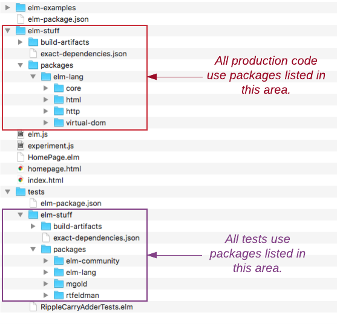
Nyní, kdy jsou všechny pakety pro psaní a spouštění testů instalované, jsme připraveni napsat nějaké testy. Vytvořte nový soubor RippleCarryAdderTests.elm v adresáři tests.

Vložte následující kód do souboru RippleCarryAdderTests.elm.
module RippleCarryAdderTests exposing (main)
import Test exposing (describe, test)
import Expect
import Test.Runner.Html exposing (run)
import RippleCarryAdder exposing (..)
main =
run <|
describe "Addition"
[ test "1 + 1 = 2" <|
\() ->
(1 + 1) |> Expect.equal 2
]Z adresáře tests spusťte v konzole elm-reactor.
Je důležité abyste zadali příkaz elm-reactor z adresáře tests a nikoliv z beginning-elm. Pokud elm-reactor již běží, zastavte jej kombinací Ctrl + c.
elm-reactor
elm-reactor 0.18.0
Listening on http://localhost:8000V prohlížeči jděte na stránku http://localhost:8000/RippleCarryAdderTests.elm. Uvidíte výsledky vyprodukované aplikací elm-reactor poté, co proběhly naše testy.
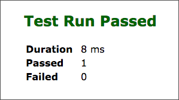
V souboru RippleCarryAdderTests.elm se odehrává mnoho věcí, které si postupně rozebereme. Definovali jsme modul RippleCarryAdderTests a několik modulů importovali:
-
import Test exposing (describe, test)importuje modul Test, který obsahuje funkce pro vytváření a provádění testů. -
import Expectimportuje modul Expect, který obsahuje funkce pro popis očekávaných výsledků v testu. -
import Test.Runner.Html exposing (run)importuje modul Test.Runner.Html, který obsahuje funkce pro spouštění testů v prohlížeči. -
import RippleCarryAdder exposing (..)importuje modulRippleCarryAdder, který jsme vytvořili v předchozí sekci. Později v této sekci budeme testovat funkce z onoho modulu.
Potom jsme definovali funkci main, která obsahuje test, jenž chceme spustit. Následující schema vysvětluje syntaxi testu.
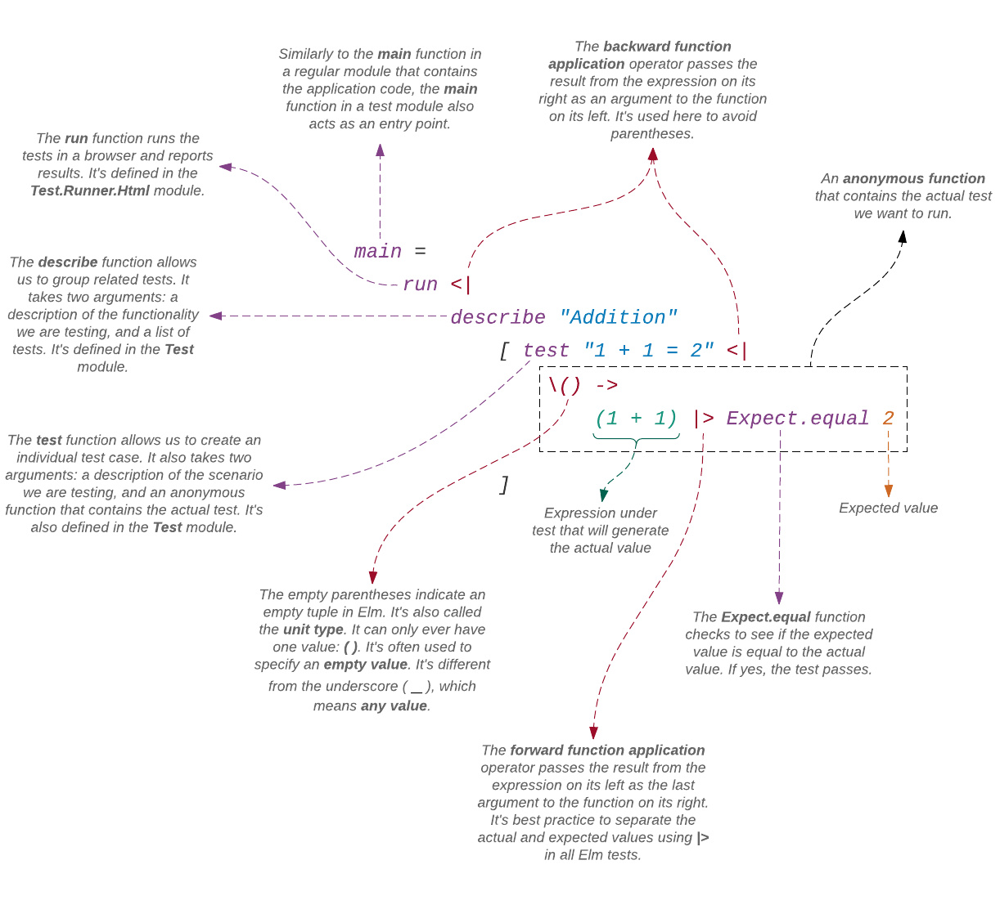
Unit type - jednotkový typ
Paket elm-test (s moduly pro psaní testů) vyžaduje abychom zabalili náš test do anonymní funkce.
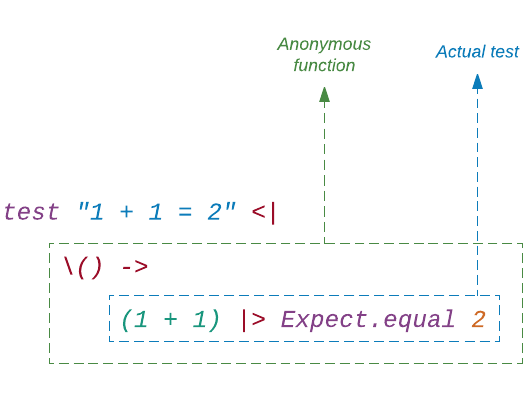
Proto nemůžeme psát náš test jenom takto:
test "1 + 1 = 2" <|
(1 + 1) |> Expect.equal 2Parametr (), zadaný anonymní funkci jež obaluje náš test, není nikdy uvnitř testu použit. Paket elm-test se ani nestará o to, aby předal parametr, který může být použit smysluplným způsobem. Pouze předá prázdnou hodnotu, reprezentovanou prázdnou enticí (), známou také pod názvem unit type. Tento "jednotkový typ" se často používá pro prezentaci prázdné hodnoty. Zadáme-li označení () v replu, je jeho typ rovněž zobrazen jako ().
> ()
() : ()O typech budeme podrobně hovořit v sekci Typy, pro tuto chvíli považujme typ za něco, co reprezentuje kolekci hodnot majících podobné vlastnosti. Například typ Int reprezentuje čísla bez desetinných částí: -1, 0, 1, 2, etc. Typ Bool reprezentuje logické hodnoty True a False.
Jednotkový typ () má jedinou hodnotu, jíž je "prázdná" entice (). Termín "prázdná entice" je však pouze pomocné označení v tomto textu, protože prázdná entice v Elmu ve skutečnosti neexistuje. Typ entice je dán počtem jejich prvků, jež musí být větší nebo roven jedné. Následující dvě entice jsou rozdílného typu i když obsahují stejný typ hodnot:
> ( 1, 2 )
(1,2) : ( number, number1 )
> ( 1, 2, 3 )
(1,2,3) : ( number, number1, number2 )Mají-li dvě entice být stejného typu, musí obsahovat stejný počet prvků stejného typu . Naprotitomu dva seznamy různé délky, obsahující stejný typ hodnot, jsou stejného typu.
> [ 1, 2 ]
[1,2] : List number
> [ 1, 2, 3 ]
[1,2,3] : List number() versus _
V Elmu je rovněž obvyklé použít podtržítko (_), chceme-li ignorovat parametr. Zde je jednoduchá anonymní funkce, která vždy vrací 0:
> List.map (\_ -> 0) [ 1, 2, 3 ]
[0,0,0] : List number
> List.map (\_ -> 0) [ 'a', 'b', 'c' ]
[0,0,0] : List numberPokud si již nepamatujete, jak funkce List.map pracuje, neváhejte a osvěžte si paměť nahlédnutím do sekce Mapování seznamu. Anonymní funkce (\_ -> 0) svůj parametr k výpočtu vratné hodnoty nepoužívá, respektive nezávisle na hodnotě parametru vrací nulu. Proto je vhodné místo ignorovaného jména používat znak _, protože nějaký parametr uvedená funkce formálně mít musí.
Při zběžném pohledu se může zdát, že se znaky_ a () používají ke stejnému účelu: ignorování parametru. Při bližším pohledu zjistíme jemný rozdíl. I když (\_ -> 0) ignoruje svůj parametr,
dovoluje nám zadat jakýkoli typ hodnoty. Ve výše uvedeném příkladu jsme nejprve zadali čísla a potom znaky (characters).
Budeme moci zadat jakýkoli typ hodnoty, přejdeme-li na znak ()? Zjistěmež to.
> List.map (\() -> 0) [ 1, 2, 3 ]
------------------ TYPE MISMATCH ------------------------
The 2nd argument to function `map` is causing a mismatch.
3| List.map (\() -> 0) [ 1, 2, 3 ]
^^^^^^^^^^^
Function `map` is expecting the 2nd argument to be:
List ()
But it is:
List numberNikoliv. Funkce (\() -> 0) přijímá pouze hodnotu typu (), nic jiného.
> List.map (\() -> 0) [ (), (), () ]
[0,0,0] : List numberOznačení _ znamená jakákoli hodnota ale () znamená pouze hodnota jednotkového typu. Náhradou _ za () jsme silně omezili naše možnosti vstupů. Chcete-li pouze ignorovat parametr bez omezování typu vstupní hodnoty funkce, použijte znak _. Na druhou stranu, pokud žádný smysluplný parametr nebude kdy zadán vaší funkci, tak jako v případě anonymní funkce, která zabalovala náš test, potom použijte označení ().
Operátor pro dopřednou aplikaci funkce (|>)
Funkce Expect.equal očekává přijetí dvou argumentů, nejprve očekávanou hodnotu a potom aktuální hodnotu. V našem testu nahoře jsme použili operátor |> k oddělení oněch dvou argumentů. Není-li vám jasné, jak |> pracuje, vraťte se zpět a projděte si sekci Dopředná aplikace funkce.
test "1 + 1 = 2" <|
\() ->
(1 + 1) |> Expect.equal 2Syntakticky vzato, nejsme povinni použít operátor |>. Mohli jsme výše uvedený test napsat bez |> a pracoval by stejně dobře.
test "1 + 1 = 2" <|
\() ->
Expect.equal 2 (1 + 1)Ovšem, použijeme-li |>, bude snadnější říci, který argument je který, když test selže. Změňte očekávanou hodnotu ve funkci main v souboru RippleCarryAdderTests.elm na 1 takto:
test "1 + 1 = 2" <|
\() ->
(1 + 1) |> Expect.equal 1Když obnovíte stránku na http://localhost:8000/RippleCarryAdderTests.elm, uvidíte neúspěšný test.
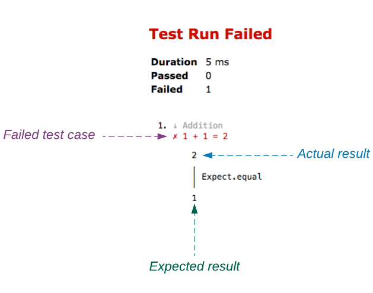
Jak vidíte v horním obrázku, aktuální výsledek je uveden před očekávaným (expected) výsledkem. Výstup silně připomíná testovací případ, který jsme napsali:
(1 + 1) |> Expect.equal 1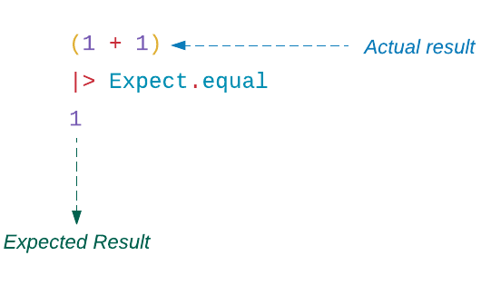
Kvůli této podobnosti je snadnější si všimnout, že náš očekávaný výsledek není správný. Kdybychom náš test napsali takto:
Expect.equal 1 (1 + 1)nebyl by náš testovací kód ve stejném pořadí jako výstup našeho testu a bylo by obtížnější je porovnat a nalézt zdroj chyby. Změňte očekávaný výsledek opět na 2 a ujistěte se, že test projde.
Napišme jiný test abychom poznali, jak použití operátoru |> činí naše testy mnohem čitelnější. Nahraďte funkci main v souboru RippleCarryAdderTests.elm následujícím kódem.
main =
run <|
describe "Addition"
[ test "1 + 1 = 2" <|
\() ->
(1 + 1) |> Expect.equal 2
, test "only 2 guardians have names with less than 6 characters" <|
\() ->
let
guardians =
[ "Star-lord", "Groot", "Gamora", "Drax", "Rocket" ]
in
guardians
|> List.map String.length
|> List.filter (\x -> x < 6)
|> List.length
|> Expect.equal 2
]Obnovíte-li stránku na http://localhost:8000/RippleCarryAdderTests.elm, uvidíte, že oba testy prošly.
Anonymní funkce, zadaná jako argument funkci test je jako každá jiná funkce až nato, že nemá jméno. Můžeme v ní použít vše, co je dovoleno v normální funkci, včetně výrazu let.
Nový test ověřuje, že jsou jenom dva hlídači, jejichž jména mají méně než šest písmen. Použili jsme tři různé transformace původního seznamu abychom získali výsledné číslo. Jak můžete vidět, operátor |> výrazně zlepšuje čitelnost našeho testu. Obsahuje-li test složité počítání jako tento, má anonymní funkce tendenci nabývat následující tvar:
\() ->
someComputation
|> producing
|> actualValue
|> Expect.equal expectedValueKdybychom nepoužili operátor |>, byl by náš test těžko čitelný, protože normálně čteme zleva doprava, zatímco logika funkce v tomto případě začíná úplně vpravo. Navíc bychom museli být velmi opatrní abychom vyhodnotili závorky ve správném pořadí.
Expect.equal 2
(List.length (List.filter (\x -> x < 6) (List.map String.length guardians)))I s operátorem <| je test stále obtížně čitelný, protože normálně čteme shora dolů ale logika funkce v tomto případě začíná dole.
Expect.equal 2 <|
List.length <|
List.filter (\x -> x < 6) <|
List.map String.length <|
guardiansOperátor pro zpětnou aplikaci funkce (<|)
Ve funkci mainjsme použili operátor <| pro zadání našeho testu funkci run. Mohli jsme místo toho použít operátor |> ale v tom případě by bylo snadné přehlédnout funkci run.
main =
describe "Addition"
[ test "1 + 1 = 2" <|
\() ->
(1 + 1) |> Expect.equal 2
, test "only 2 guardians have names with less than 6 characters" <|
\() ->
let
guardians =
[ "Star-lord", "Groot", "Gamora", "Drax", "Rocket" ]
in
guardians
|> List.map String.length
|> List.filter (\x -> x < 6)
|> List.length
|> Expect.equal 2
]
|> runVšimněte si, jak se funkce run komíhá na úplném spodku . Operátor <| potřebujeme použít také po každém popisu testu ale nepotřebujeme jej v řádku describe. To proto, že funkce describe nepotřebuje zabalit svůj druhý argument (seznam testů) do závorek. Zde je zjednodušená verze funkce describe bez testů:
main =
describe "Addition"
[]Funkce test na druhé straně, závorky kolem svého druhého argumentu, jímž je anonymní funkce, potřebuje. Bez těchto závorek nemůže kompilátor řádně kód parsovat. Takto vypadají testy se závorkami:
main =
run <|
describe "Addition"
[ test "1 + 1 = 2"
(\() ->
(1 + 1) |> Expect.equal 2
)
, test "only 2 guardians have names with less than 6 characters"
(\() ->
let
guardians =
[ "Star-lord", "Groot", "Gamora", "Drax", "Rocket" ]
in
guardians
|> List.map String.length
|> List.filter (\x -> x < 6)
|> List.length
|> Expect.equal 2
)
]Těžko se to čte. Můžeme to zlepšít náhradou závorek operátorem <|, který předává výsledek výrazu své pravé straně jako poslední argument funkci na své levé straně.
Neúspěšné testy
Příklad neúspěšného testu jsme již viděli. Napišme jich více takových abychom si pozvičili mozek ve správném čtení výstupu. Nahraďte funkci main v souboru RippleCarryAdderTests.elm následujícím kódem.
main =
run <|
describe "Less than comparison"
[ test "an empty list's length is less than 1" <|
\() ->
List.length []
|> Expect.lessThan -1
]Obnovte stránku na http://localhost:8000/RippleCarryAdderTests.elm abyste viděli test, který selhal.
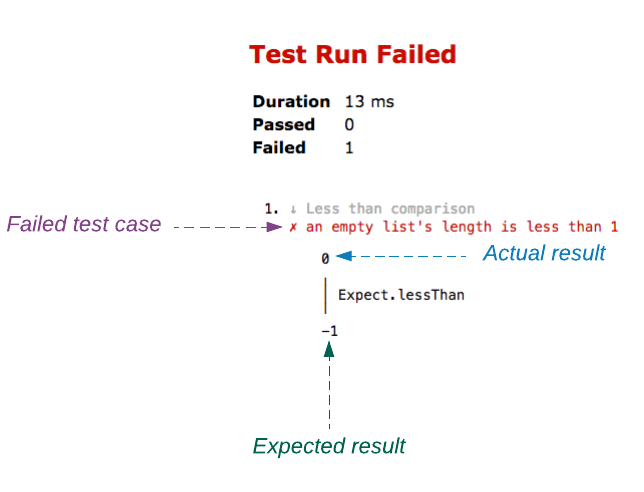
Opět, protože jsme použili operátor pro dopředné vyhodnocení funkce, připomíná pořadí našeho výstupu pořadí našeho testovacího případu.
List.length []
|> Expect.lessThan -1Když test selže, může to znamenat dvě věci: buď jsme se dopustili chyby při psaní testu nebo je logika testované funkce či výrazu nesprávná. Je-li nesprávná logika, musíme ji samozřejmě opravit. Je-li test samotný nesprávný, musíme jej rovněž upravit. V našem příkladu výše, výraz List.length [] nikdy nevyprodukuje hodnotu menší než -1. Náš test je tudíž nesprávný.
Sestava dobře napsaných testů hraje kritickou roli v refaktoraci existujícího kódu. Dodává nám důvěru při přepisování kódu za účelem lepší čitelnosti a snadnějšího udržování. Dopustíme-li se chyby, test ji odchytí. Proto je důležité udržovat naše testovací sestavy v čistém stavu odebráním všech nesprávně napsaných selhávajících testů.
- Refaktorace
- Refaktorace je taková změna programu, která nemění vnější chování kódu ale zlepšuje jeho vnitřní strukturu. - Martin Fowler
Více očekávání
Modul Expect poskytuje několik dalších funkcí, která nám umožňují vyjádřit různá očekávání (expectations) a nikoliv pouze rovnost. Nahraďte funkci main v souboru RippleCarryAdderTests.elm následujícím kódem.
main =
run <|
describe "Comparison"
[ test "2 is not equal to 3" <|
\() ->
2 |> Expect.notEqual 3
, test "4 is less than 5" <|
\() ->
4 |> Expect.lessThan 5
, test "6 is less than or equal to 7" <|
\() ->
6 |> Expect.atMost 7
, test "9 is greater than 8" <|
\() ->
9 |> Expect.greaterThan 8
, test "11 is greater than or equal to 10" <|
\() ->
11 |> Expect.atLeast 10
, test "a list with zero elements is empty" <|
\() ->
(List.isEmpty [])
|> Expect.true "expected the list to be empty"
, test "a list with some elements is not empty" <|
\() ->
(List.isEmpty [ "Jyn", "Cassian", "K-2SO" ])
|> Expect.false "expected the list not to be empty"
]Obnovte stránku na http://localhost:8000/RippleCarryAdderTests.elm, měli byste se dozvědět, že všechy testy prošly.
Výše uvedené testy jsou samovysvětlující kromě posledních dvou.
Funkce Expect.true a Expect.false vyžadují abychom zadali řetězec jako první argument. To proto, že když test selže, je řetězec použit jako vysvětlení selhání. Vytvořte test, který selže zadáním neprázdného řetězce funkci Expect.truetakto:
main =
run <|
describe "Comparison"
.
.
, test "a list with zero elements is empty" <|
\() ->
(List.isEmpty [ "The Ancient One" ])
|> Expect.true "expected the list to be empty"
]
.
.Po obnovení stránky na http://localhost:8000/RippleCarryAdderTests.elm, byste měli vidět vysvětlení proč tento test selhal
you should see the explanation for why it failed.
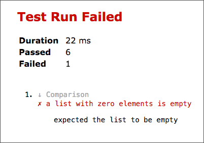
Modul Expect poskytuje dokonce více způsobů vyjádření "expectations". Můžete si o nich přečíst více zde. Nyní, když jsme obeznámeni se psaním testů v Elmu, obraťme naší pozornost k testování různých funkcí v souboru RippleCarryAdder.elm.
Testování funkce inverter
Začněme funkcí inverter, která je pro testování nejsnadnější. Pro osvěžení naší paměti si tuto funkci znovu uvedeme:
inverter a =
case a of
0 ->
1
1 ->
0
_ ->
-1Přidejte následující testy na konec kódu v souboru RippleCarryAdderTests.elm.
inverterTests =
describe "Inverter"
[ test "output is 0 when the input is 1" <|
\() ->
inverter 0
|> Expect.equal 1
, test "output is 1 when the input is 0" <|
\() ->
inverter 1
|> Expect.equal 0
]I když funkce inverterTests vypadá odlišně od těch, které jsme psali dříve, není na ní nic speciálního. Chová se úplně stejně jako normální funkce. Rověž respektuje všechna formátovací pravidla aplikovaná na normální funkci.
Každý testovací případ ve funkci inverterTests reprezentuje řádek z pravdivostní tabulky invertoru, kterou jsme viděli v předchozí sekci.
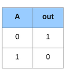
Nyní nahraďte funkci main function in RippleCarryAdderTests.elm tímto zápisem:
main =
run <|
describe "4-bit Ripple Carry Adder Components"
[ inverterTests ]Obnovíte-li stránku na http://localhost:8000/RippleCarryAdderTests.elm, uvidíte, že všechny testy prošly.
Až dosud jsme vypisovali všechny naše testy uvnitř funkce main ale pro testování invertoru jsme vytvořili samostatnou funkci. Přenesení souvisejících testů do samostatné funkce usnadňuje organizaci naší testovací sestavy.
Testování funkce andGate
Testování funkce andGate je velmi podobné testování funkce inverter. Potřebujeme ošetřit všechny možné výstupy. Funkce andGate vypadá takto:
andGate a b =
Bitwise.and a bPřidejte následující testy do souboru RippleCarryAdderTests.elm.
andGateTests =
describe "AND gate"
[ test "output is 0 when both inputs are 0" <|
\() ->
andGate 0 0
|> Expect.equal 0
, test "output is 0 when the first input is 0" <|
\() ->
andGate 0 1
|> Expect.equal 0
, test "output is 0 when the second input is 0" <|
\() ->
andGate 1 0
|> Expect.equal 0
, test "output is 1 when both inputs are 1" <|
\() ->
andGate 1 1
|> Expect.equal 1
]Podobně jako u funkce inverterTests, reprezentuje každý test funkce andGateTests řádek z její pravdivostní tabulky.
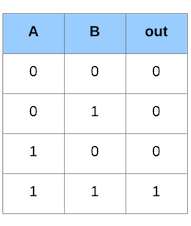
Přidejte andGateTests do seznamu testů ve funkci main v souboru RippleCarryAdderTests.elm.
main =
run <|
describe "4-bit Ripple Carry Adder Components"
[ inverterTests
, andGateTests
]Obnovíte-li stránku na http://localhost:8000/RippleCarryAdderTests.elm, uvidíte, že všechny testy prošly.
Cvičení 4.5.1
S použitím funkce andGateTests jako doporučení, napište testy pro funkci orGate, jejíž definice vypadá takto:
orGate a b =
Bitwise.or a bZde je pravdivostní tabulka pro ORgate:
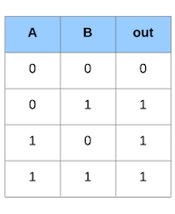
Po vypsání svých testů a doplnění jejich funkce do main, nezapomeňte obnovit stránku na http://localhost:8000/RippleCarryAdderTests.elm abyste se mohli ujistit, že všechny testy prošly.
Testování funkce halfAdder
Funkce halfAdder je lehce složitější, protože produkuje dva výstupy: sum a carry-out.
halfAdder a b =
let
d =
orGate a b
e =
andGate a b
|> inverter
sumDigit =
andGate d e
carryOut =
andGate a b
in
{ carry = carryOut
, sum = sumDigit
}Přes víceré výstupy, jsou testy funkce halfAdder velmi podobné testům funkce andGate. Přidejte následující testy na spodek souboru RippleCarryAdderTests.elm.
halfAdderTests =
describe "Half adder"
[ test "sum and carry-out are 0 when both inputs are 0" <|
\() ->
halfAdder 0 0
|> Expect.equal { carry = 0, sum = 0 }
, test "sum is 1 and carry-out is 0 when the 1st input is 0 and the 2nd input is 1" <|
\() ->
halfAdder 0 1
|> Expect.equal { carry = 0, sum = 1 }
, test "sum is 1 and carry-out is 0 when the 1st input is 1 and the 2nd input is 0" <|
\() ->
halfAdder 1 0
|> Expect.equal { carry = 0, sum = 1 }
, test "sum is 0 and carry-out is 1 when both inputs are 1" <|
\() ->
halfAdder 1 1
|> Expect.equal { carry = 1, sum = 0 }
]Každý testovací případ funkce halfAdderTests reprezentuje jeden řádek její pravdivostní tabulky.
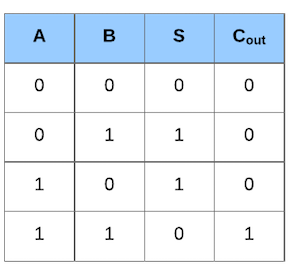
Přidejte funkci halfAdderTests k výpisu testů ve funkci main v souboru RippleCarryAdderTests.elm.
main =
run <|
describe "4-bit Ripple Carry Adder Components"
[ inverterTests
, andGateTests
, orGateTests
, halfAdderTests
]Občerstvíte-li stránku na http://localhost:8000/RippleCarryAdderTests.elm, uvidíte že všechny testy prošly.
Pokud jste nedokončili Cvičení 4.5.1, dostanete chybu. Je to místo, kde je definována funkce orGateTests.
Testování funkcefullAdder
Funkce fullAdder vypadá takto:
fullAdder a b carryIn =
let
firstResult =
halfAdder b carryIn
secondResult =
halfAdder a firstResult.sum
finalCarry =
orGate firstResult.carry secondResult.carry
in
{ carry = finalCarry
, sum = secondResult.sum
}Přijímá o vstup (carryIn) více než funkce halfAdder. Musíme se proto postarat o všech osm kombinací vstupů, jak zobrazeno v pravdivostní tabulce níže.
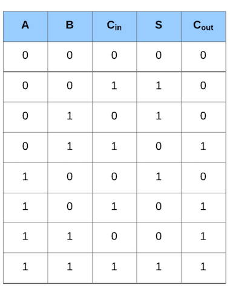
Přidejte následující testy do souboru RippleCarryAdderTests.elm.
fullAdderTests =
describe "Full adder"
[ test "sum and carry-out are 0 when both inputs and carry-in are 0" <|
\() ->
fullAdder 0 0 0
|> Expect.equal { carry = 0, sum = 0 }
, test "sum is 1 and carry-out is 0 when both inputs are 0, but carry-in is 1" <|
\() ->
fullAdder 0 0 1
|> Expect.equal { carry = 0, sum = 1 }
, test "sum is 1 and carry-out is 0 when the 1st input is 0, the 2nd input is 1, and carry-in is 0" <|
\() ->
fullAdder 0 1 0
|> Expect.equal { carry = 0, sum = 1 }
, test "sum is 0 and carry-out is 1 when the 1st input is 0, the 2nd input is 1, and the carry-in is 1" <|
\() ->
fullAdder 0 1 1
|> Expect.equal { carry = 1, sum = 0 }
, test "sum is 1 and carry-out is 0 when the 1st input is 1, the 2nd input is 0, and the carry-in is 0" <|
\() ->
fullAdder 1 0 0
|> Expect.equal { carry = 0, sum = 1 }
, test "sum is 0 and carry-out is 1 when the 1st input is 1, the 2nd input is 0, and the carry-in is 1" <|
\() ->
fullAdder 1 0 1
|> Expect.equal { carry = 1, sum = 0 }
, test "sum is 0 and carry-out is 1 when the 1st input is 1, the 2nd input is 1, and the carry-in is 0" <|
\() ->
fullAdder 1 1 0
|> Expect.equal { carry = 1, sum = 0 }
, test "sum is 1 and carry-out is 1 when the 1st input is 1, the 2nd input is 1, and the carry-in is 1" <|
\() ->
fullAdder 1 1 1
|> Expect.equal { carry = 1, sum = 1 }
]Stejně jako u všech dosud napsaných testů, reprezentují testy uvnitř funkce fullAdderTests řádky z pravdivostní tabulky funkce fullAdder. Přidejte fullAdderTests do funkce main.
main =
run <|
describe "4-bit Ripple Carry Adder Components"
[ inverterTests
, andGateTests
, orGateTests
, halfAdderTests
, fullAdderTests
]Po obnovení stránky na http://localhost:8000/RippleCarryAdderTests.elm, se ujistíte, že všechny testy prošly.
Popisy testů ve funkci fullAdderTests jsou příliš dlouhé a tudíž nepřehedné. Čitelnost můžeme zlepšit seskupením podobných testů do bloků describe. Nahraďte funkci fullAdderTests následujícím kódem.
fullAdderTests =
describe "Full adder"
[ describe "when both inputs are 0"
[ test "and carry-in is 0 too, then both sum and carry-out are 0" <|
\() ->
fullAdder 0 0 0
|> Expect.equal { carry = 0, sum = 0 }
, test "but carry-in is 1, then sum is 1 and carry-out is 0" <|
\() ->
fullAdder 0 0 1
|> Expect.equal { carry = 0, sum = 1 }
]
, describe "when the 1st input is 0, and the 2nd input is 1"
[ test "and carry-in is 0, then sum is 1 and carry-out is 0" <|
\() ->
fullAdder 0 1 0
|> Expect.equal { carry = 0, sum = 1 }
, test "and carry-in is 1, then sum is 0 and carry-out is 1" <|
\() ->
fullAdder 0 1 1
|> Expect.equal { carry = 1, sum = 0 }
]
, describe "when the 1st input is 1, and the 2nd input is 0"
[ test "and carry-in is 0, then sum is 1 and carry-out is 0" <|
\() ->
fullAdder 1 0 0
|> Expect.equal { carry = 0, sum = 1 }
, test "and carry-in is 1, then sum is 0 and carry-out is 1" <|
\() ->
fullAdder 1 0 1
|> Expect.equal { carry = 1, sum = 0 }
]
, describe "when the 1st input is 1, and the 2nd input is 1"
[ test "and carry-in is 0, then sum is 0 and carry-out is 1" <|
\() ->
fullAdder 1 1 0
|> Expect.equal { carry = 1, sum = 0 }
, test "and carry-in is 1, then sum is 1 and carry-out is 1" <|
\() ->
fullAdder 1 1 1
|> Expect.equal { carry = 1, sum = 1 }
]
]Nyní jsou mnohem přehlednější. Seskupování podobných testů do bloků describe se vřele doporučuje. Vždycky bychom měli hledat cesty ke zlepšení přehlednosti našich testů. Kromě verifikace chování našeho kódu, slouží testy také jako popis očekávaného chování. Zpřehlednění našich testů je stejně důležité, jako zpřehlednění našeho kódu.
Bloky describe můžeme zanořovat do sebe podle potřeby. Zde je přepsaná funkce fullAdderTests s vícerými bloky describe:
fullAdderTests =
describe "Full adder"
[ describe "when both inputs are 0"
[ describe "and carry-in is 0"
[ test "both sum and carry-out are 0" <|
\() ->
fullAdder 0 0 0
|> Expect.equal { carry = 0, sum = 0 }
]
, describe "but carry-out is 1"
[ test "sum is 1 and carry-out is 0" <|
\() ->
fullAdder 0 0 1
|> Expect.equal { carry = 0, sum = 1 }
]
]
, describe "when the 1st input is 0"
[ describe "and the 2nd input is 1"
[ describe "and carry-in is 0"
[ test "sum is 1 and carry-out is 0" <|
\() ->
fullAdder 0 1 0
|> Expect.equal { carry = 0, sum = 1 }
]
, describe "and carry-in is 1"
[ test "sum is 0 and carry-out is 1" <|
\() ->
fullAdder 0 1 1
|> Expect.equal { carry = 1, sum = 0 }
]
]
]
, describe "when the 1st input is 1"
[ describe "and the 2nd input is 0"
[ describe "and carry-in is 0"
[ test "sum is 1 and carry-out is 0" <|
\() ->
fullAdder 1 0 0
|> Expect.equal { carry = 0, sum = 1 }
]
, describe "and carry-in is 1"
[ test "sum is 0 and carry-out is 1" <|
\() ->
fullAdder 1 0 1
|> Expect.equal { carry = 1, sum = 0 }
]
]
]
, describe "when the 1st input is 1"
[ describe "and the 2nd input is 1"
[ describe "and carry-in is 0"
[ test "sum is 0 and carry-out is 1" <|
\() ->
fullAdder 1 1 0
|> Expect.equal { carry = 1, sum = 0 }
]
, describe "and carry-in is 1"
[ test "sum is 1 and carry-out is 1" <|
\() ->
fullAdder 1 1 1
|> Expect.equal { carry = 1, sum = 1 }
]
]
]
]Se zanořováním bloků describe bychom to však neměli přehánět. Psaní opakovaně vnořovaných bloků describe může být únavné. Nicméně, zanořené bloky usnadňují čtení při selhání testu.
nesting does make the output read a little bit better when a test fails. Pokusíte-li se o neúspěšný test horního příkladu s méně bloky describe, bude výstup takovýto:
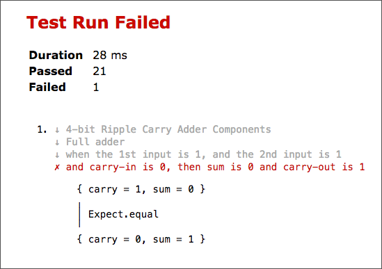
Porovnejte tento výstup s výstupem následujícím, který ukazuje neúspěšný test z příkladu opakovaně zanořovanéhoo.
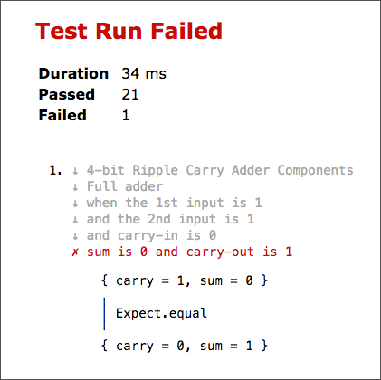
Pro hloubku zanořování nejsou v Elmu žádná pevná pravidla, používejte tedy takovou úroveň zanořování, která vám bude nejvíce vyhovovat.
Cvičení 4.5.2
Zkuste zlepšit čitelnost testů funkce halfAdderTests přidáním dalších bloků describe.
Testování funkce rippleCarryAdder
4-bitová ripple-carry sčítačka má osm vstupů a pět výstupů.
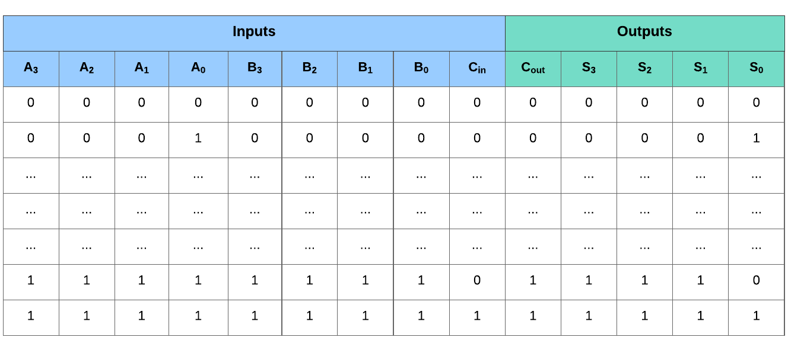
To znamená, že je 512 (2 ^ 9) různých permutací, jež můžeme ověřit. To je hromada testů. Vyvstává tedy otázka, zda musíme psát test pro každý člen vstupu. Odpověď závisí na tom, jak hodně důvěřujeme naší funkci. Víme-li, co naše funkce přesně dělá, je nasnadě, že toliké testování nepotřebujeme. Je-li však funkce složitá, s mnoha okrajovými připady, může být velmi důležité, všechny tyto případy prověřit.
Jsem placen za kód, který pracuje a ne za testy, takže moje filozofie je testovat tak málo, jak možno, k dosažení požadované úrovně důvěry. - Kent Beck
Dobrou věcí ohledně testování v Elmu je to, že můžeme kombinovat různé typy testů k dosažení správné úrovně důvěry ve svůj kód. Doposud jsme psali jenom jednotkové testy. Elm také nabízí další typ testování, zvaný fuzz testing, neboli "neostré" testování. Je to způsob testování, při kterém tentýž test je opakovaně spouštěn s náhodně generovanými vstupy.
Funkce rippleCarryAdder
je dobrým kandidátem pro "fuzzy" testování ale počkejme si na sekci Fuzzy testování, kde si toto testování popíšeme. Prozatím si napišme několik jednotkových testů, jimiž nahradíme fuzzy testy, které napíšeme později. Přidejte následujcíí testy na spodek souboru RippleCarryAdderTests.elm.
rippleCarryAdderTests =
describe "4-bit ripple carry adder"
[ describe "given two binary numbers and a carry-in digit"
[ test "returns the sum of those numbers and a carry-out digit" <|
\() ->
rippleCarryAdder 1001 1101 1
|> Expect.equal 10111
]
, describe "when the 1st input is 1111, and the 2nd input is 1111"
[ test "and carry-in is 0, the output is 11110" <|
\() ->
rippleCarryAdder 1111 1111 0
|> Expect.equal 11110
, test "and carry-in is 1, the output is 11111" <|
\() ->
rippleCarryAdder 1111 1111 1
|> Expect.equal 11111
]
, describe "when the 1st input is 0000, and the 2nd input is 0000"
[ test "and carry-in is 0, the output is 0000" <|
\() ->
rippleCarryAdder 0 0 0
|> Expect.equal 0
, test "and carry-in is 1, the output is 0001" <|
\() ->
rippleCarryAdder 0 0 1
|> Expect.equal 1
]
]Nyní doplňte rippleCarryAdderTests do funkce main abychom mohli výše uvedený test spustit.
main =
run <|
describe "4-bit Ripple Carry Adder Components"
[ inverterTests
, andGateTests
, orGateTests
, halfAdderTests
, fullAdderTests
, rippleCarryAdderTests
]Obnovíte-li stránku na http://localhost:8000/RippleCarryAdderTests.elm, měli byste vidět, že všechny testy prošly.
Napsali jsme jeden test abychom zjistili, co funkce vlastně dělá a další dva testy k ověření mezních případů. Jednotkové testy jsou obecně vhodné k otestování určitých možností, které buď reprezentují mezní případ nebo mez vstupu. První test ověřuje, že funkce rippleCarryAdder generuje očekávaný výstup při sčítání dvou náhodně zvolených čísel. Zbylé čtyři testy ověřují, že je generován správný výstup při sčítání samých jedniček a nul.
V posledních dvou testech jsme museli k reprezentaci binárních čísel začínajících nulou použít jednotlivé číslice, protože se elm-format zbavuje počátečních nul při ukládání souboru. Test přesto chodí, protože funkce vkládá nuly do čela, nemá-li číslo čtyři číslice.
Jak jsme mohli vidět v uvedených příkladech, je psaní testů pro čisté funkce přímočará záležitost. Vše, co musíme udělat, je řádně identifikovat hodnoty v množině vstupů, opakovaně tyto hodnoty zadat funkci a ověřit, že generované hodnoty patří do množiny výstupů. Nemusíme se starat o ověření, zda funkce modifikovala svůj stav či nezpůsobila nějaké jiné vedlejší účinky.
Spouštění testů z terminálu
Spouštění testů v prohlížeči je výhodné ale jsou situace, kdy je chceme spouštět i z konzoly. Předtím, než tak budeme moci učinit, musíme zapsat nějaký kód a instalovat několik paketů.
Krok 1: Vytvořte nový soubor RunTestsInBrowser.elm v adresáři beginning-elm/tests a vložte do něho následující kód.
module RunTestsInBrowser exposing (main)
import Test.Runner.Html exposing (run)
import RippleCarryAdderTests exposing (allTests)
main =
run allTestsNadále budeme testování funkcí ze souboru RippleCarryAdderTests.elm spouštět ze souboru RunTestsInBrowser.elm, místo z RunTestsInBrowser.elm. Vše, co soubor RunTestsInBrowser.elm zajišťuje, je to, že si z modulu RippleCarryAdderTests přivolá seznam testů a spustí je v prohlížeči. Funkce allTests bude vysvětlena ve kroku 3 níže.
Krok 2: Vytvořte další soubor s názvem RunTestsInTerminal.elm v adresáři beginning-elm/tests a vložte do něho následující kód.
port module RunTestsInTerminal exposing (main)
import Test.Runner.Node exposing (run)
import Json.Encode exposing (Value)
import RippleCarryAdderTests exposing (allTests)
main =
run emit allTests
port emit : ( String, Value ) -> Cmd msgFunkce run z modulu Test.Runner.Node emituje testy do terminálu přes port. Bez porozumění toho jak porty pracují, je obtížné si představit, jak pracuje kód v souboru RunTestsInTerminal.elm. O portech budeme podrobně hovořit v sekci Ports. Potom se budete moci vrátit a prostudovat si tento kód znova. Paket, který obsahuje modul Test.Runner.Node si nainstalujeme v kroku 6 níže.
Krok 3: Přejmenujte funkci main v souboru RippleCarryAdderTests.elm na allTests a odeberte řádek, který aplikoval funkci run.
allTests =
describe "4-bit Ripple Carry Adder Components"
[ inverterTests
, andGateTests
, orGateTests
, halfAdderTests
, fullAdderTests
, rippleCarryAdderTests
]Krok 4: Odeberte následující řádek ze souboru RippleCarryAdderTests.elm.
import Test.Runner.Html exposing (run)Protože už funkci run nebudeme používat, nepotřebujeme importovat modul Test.Runner.Html.
Krok 5: Exponujte funkci allTests v souboru RippleCarryAdderTests.elm záměnou funkce main za allTests takto:
module RippleCarryAdderTests exposing (allTests)Jak modul RunTestsInBrowser, tak modul RunTestsInTerminal získají přístup k testům v souboru RippleCarryAdderTests.elmprostřednictvím funkce allTests. Proto musí být exponována (exposed).
Krok 6: Přejděte v terminálu do adresáře beginning-elm/tests a zadejte následující příkaz pro instalaci paketů Elmu, které nám umožní spouštět naše testy v terminálu.
Je důležité, abyste následující příkaz spustili z adresáře tests. Kdybyste jej spustii z adresáře beginning-elm, byl by paket přidán jako dependence k produkční verzi souboru elm-package.json, což není to, co si přejeme.
elm-package install rtfeldman/node-test-runnerInstalace elm-package od vás bude vyžadovat souhlas. Odpovídejte y a schvalte nabízený plán aktualizace.
Krok 7: Potřebujeme instalovat ještě jeden nástroj, abychom mohli spouštět naše testy. V terminálu přejděte do adresáře beginning-elm a zadejte následující příkaz.
npm install -g elm-testV sekci Instalace Node.js jsme se dozvěděli, že jedním z důvodů, proč musíme instalovat Node.js je to abychom mohli používat NPM (Node.js Package Manager) k instalaci nástrojů a knihoven, potřebných pro vytváření čelních webových aplikací. Mnoho nástrojů, určených pro urychlení vývojových a testovacích procesů v Elmu je rovněž distribuováno jako pakety NPM; elm-test je jedním z oněch paketů. Umožňuje nám spouštět testy Elmu z terminálu nebo z kontinuálního integračního serveru.
Opce -g v příkazu nahoře způsobuje globální instalaci paketu, takže můžeme používat příkaz elm-test odkudkoli v terminálu.
Krok 8: Nyní jsme připraveni spouštět naše testy z terminálu. Přejděte do adresáře beginning-elm a zadejte následující příkaz:
elm-test tests/RunTestsInTerminal.elmMěl by se zobrazit následující výstup, informující že všechny testy prošly.
Success! Compiled 11 modules.
Successfully generated /var/folders/w9/lhzr92wx6hnd44s39dqf5hsh0000gn/T/elm_test_11703-71443-4nkwak.jresotuik9.js
elm-test
--------
Running 28 tests. To reproduce these results, run: elm-test --seed 521208900
TEST RUN PASSED
Duration: 47 ms
Passed: 28
Failed: 0Nyní již víme jak spouštět testy z terminálu. Ujistěme se, že stále můžeme spouštět naše testy v prohlížeči. Přejděte do adresáře beginning-elm/tests a spusťte elm-reactor. Poté navštivte stránku na http://localhost:8000/RunTestsInBrowser.elm, měl byste rovněž vidět, že všechny testy prošly.
Cvičení 4.5.3
Změňte test v souboru RippleCarryAdderTests.elm tak aby zaručeně neprošel. Potom tuto testovací sestavu spusťte z terminálu aby se ukázalo jak vypadá výstup při selhání testu.
Cvičení 4.5.4
Naše současná sestava nám nedovoluje spouštět individuální testy (např. inverterTests, orGateTests, etc.). Zkuste přijít na to, jak to zařídit.